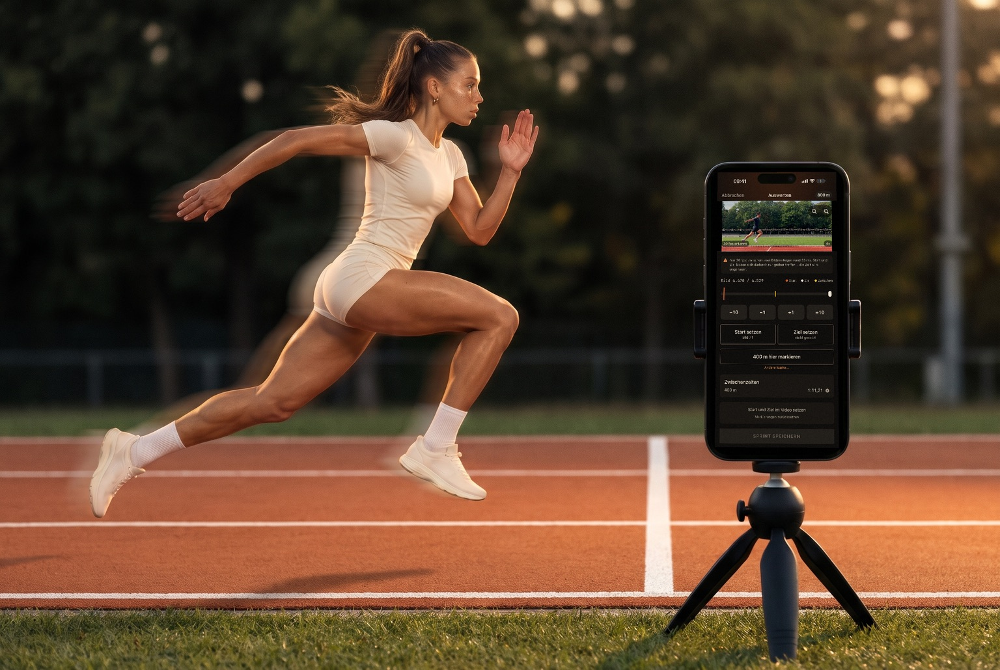
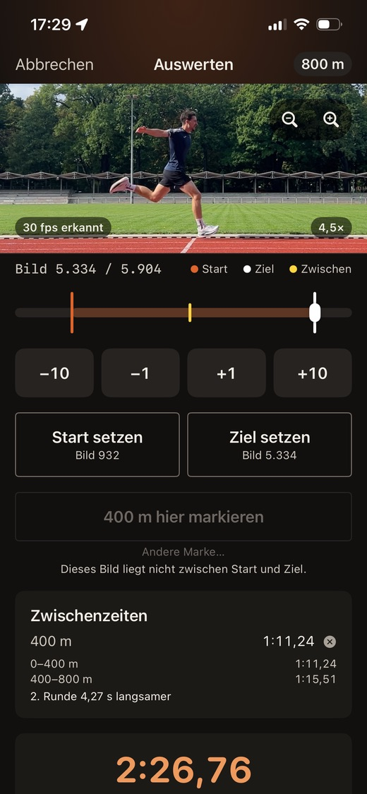

Ausdauer
+19 %
Mehr maximale Sauerstoffaufnahme nach zwölf Wochen mit kurzen Radsprints.
Sprintzeiten aus dem Video · Für iPhone
Lauf wieder los. Provarun misst deine Zeit aus dem Video, auf die Hundertstel.
Kostenlos ladenKI-Bild

Als Kinder laufen wir einfach los. Schnell laufen gehört zum Menschen, und es lässt sich wieder entdecken.
Und es tut dir gut. Bei einem Sprint arbeiten fast alle großen Muskeln mit: Gesäß, Oberschenkel, Waden, Hüftbeuger, Rumpf und Arme.
Schnelle Muskelfasern arbeiten beim Sprinten mit.
Mehr Kraft im Kniebeugentest nach zehn Wochen Lauf-Sprinttraining.
So lange blieb das Wachstumshormon nach einem einzigen 30-Sekunden-Sprint erhöht.
Mensch / Warum es dir fehlt
Wann gibt er dir schon Raum, schnell zu sein?
Wieder anfangen
Ausdauer
Mehr maximale Sauerstoffaufnahme nach zwölf Wochen mit kurzen Radsprints.
Zeitaufwand
Zehn statt fünfzig Minuten pro Einheit bei ähnlichem Ausdauergewinn.
Knochendichte
Höhere Hüftknochendichte bei Masters-Sprintern als bei Gleichaltrigen ohne Sport.
Provarun / Der Aufbau
Deine Zeit kommt aus dem Video. Den Zielmoment wählst du selbst.

Seitlich am Ziel, stabil auf der verlängerten Linie.
Vorlauf einstellen. Zum Start gehen. Auf den Startschuss warten.
Bild für Bild den Zielmoment wählen. Die Zeit speichern.


Provarun / Dein eigener Maßstab
50 bis 800 m. Bild für Bild auswerten. Bestzeiten und Fortschritt sehen.
Auch mit Videos aus deiner Mediathek. Dazu Laufbahnen, Aufwärmen und Technik. Deine Videos und Zeiten bleiben auf deinem iPhone. Ohne Konto.
Optional / Provarun Pro
Messen bleibt kostenlos.
Pro ergänzt einen Trainingsplan über sechs Wochen mit Zielzeiten aus deinen Bestzeiten. Dazu Regeneration: Atemübung, Pausen und Schlaf.
Jahresabo: eine Woche gratis für Berechtigte, danach 29,99 € pro Jahr. Automatische Verlängerung, im App Store kündbar.
Pro in der App entdeckenStand und Preise: Provarun, Version 1.1
Nr. 50 ·
Paul Knutzen„So eine App gab es noch nicht, also habe ich eine gebaut.“
Er hat neben seinem Studium eine App namens ProvaRun entwickelt, mit der Läufer Sprints messen und speichern können.
DIE ZEIT, Nr. 50, 19. November 2026
Wirtschaft · „Die Einhörner werden mehr“
Fabian Franke, Anja Stehle und Jens Tönnesmann
Geschichten / Hinter der Bewegung

Was uns schnell macht. Wie unser Körper beim Sprinten arbeitet. Und warum es sich lohnt, die eigene Geschwindigkeit wiederzuentdecken.
Die Geschichte lesen
Ein Video macht deine Zeit nachprüfbar. Wie genau sie ist, entscheidet sich an Bildrate, Start und Zielmoment.
Zum Beitrag
Wieder schnell laufen beginnt mit kontrollierten Schritten. Eine Orientierung für den Weg zurück zu Antritt, Rhythmus und einer eigenen Zeit.
Zum BeitragDie Bildrate begrenzt, wie fein du Start und Ziel wählen kannst. Bei konstanten 30 Bildern pro Sekunde liegen rund 33 Millisekunden zwischen zwei Bildern. Mehr Bilder pro Sekunde erlauben eine feinere Auswahl. Die Anzeige auf Hundertstel ist keine Garantie für eine Genauigkeit von einer Hundertstelsekunde.
Messen, Auswerten, Bestzeiten, Aufwärmen und Dehnen sind kostenlos. Pro ist optional und kostet 4,99 € im Monat oder 29,99 € im Jahr. Beim Jahresabo gibt es eine Woche gratis für Berechtigte, danach verlängert es sich automatisch. Du kannst im App Store kündigen.
Provarun braucht kein Konto und keine Registrierung. Videos, Zeiten und Favoriten liegen lokal auf deinem iPhone. Für die Suche nach Laufbahnen, Karten, Ortsnamen und Fahrzeit nutzt die App die entsprechenden Dienste. Preis, Kauf und Wiederherstellen von Pro laufen über den App Store.
Provarun misst Läufe von 50 bis 800 Metern aus dem Video. Du wählst Start und Ziel Bild für Bild und kannst auch Videos aus deiner Mediathek auswerten.
Die App-Oberfläche ist derzeit auf Deutsch. Eine englische Version ist in Arbeit. Die Website kannst du schon auf Englisch lesen.
Dein nächster Sprint
Ein iPhone. Eine Strecke.
Deine eigene Zeit als Maßstab.
Provarun ist ein Trainingswerkzeug, keine Wettkampfmessung nach den Regeln eines Verbandes. Die Zeiten sind dafür gedacht, dich mit dir selbst zu vergleichen.
Sprinten ist eine hohe Belastung. Trainiere im Rahmen deiner Möglichkeiten und kläre bei gesundheitlichen Beschwerden die Belastung vorher ärztlich ab.